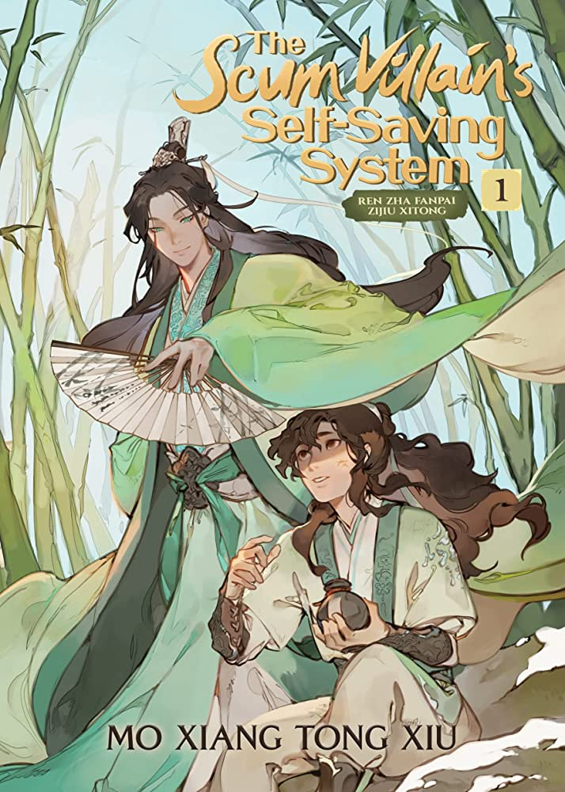

1.Heaven Official's Blessing
Heaven Official's Blessing (Chinese: 天官赐福, pinyin: Tiān Guān Cì Fú) is a Chinese novel series written by Mo Xiang Tong Xiu (Chinese: 墨香铜臭). A donghua series adaptation was first released on Bilibili and Funimation on 31 October 2020 and received a positive review and recommendation by CBR. The novel was first published in 2017 on Jinjiang Literature City, a popular Chinese website for publishing and serializing online fiction. It consists of 244 chapters and an additional five stories in eight chapters that take place post-canon. Eight hundred years ago, Xie Lian was the Crown Prince of the Xian Le kingdom. He was loved by his citizens and was considered the darling of the world. He ascended to the Heavens at a young age; however, due to unfortunate circumstances, was quickly banished back to the mortal realm. Years later, he ascends again–only to be banished again a few minutes after his ascension. Now, eight hundred years later, Xie Lian ascends to the Heavens for the third time as the laughing stock among all three realms. On his first task as a god thrice ascended, he meets a mysterious ghost who rules the ghosts and terrifies the Heavens, yet, unbeknownst to Xie Lian, this ghost king has been paying attention to him for a very, very long time.
2.The Husky and His White Cat Shizun
The Husky and His White Cat Shizun (二哈和他的白猫师尊) is a xianxia novel written by Meatbun Doesn't Eat Meat (肉包不吃肉) and published on JJWXC between 2017 and 2019. It consists of 311 main chapters and 5 extras divided into 39 chapters. The novel tells a story about Mo Ran who is reborn and transmigrated to the year when he first became a disciple of Chu Wanning. Emperor of the cultivation world Mo Weiyu deceived elders and slaughtered ancestors, and committed all crimes and sins known to man. After ending his own life, he was reborn and transmigrated to the year he first became a disciple. In the shell of a boy held an old and weary soul. After coming back to life, truth after truth that had been hidden below the surface in the previous life floated to the top and broke through the waters one after the other. Of all revelations, the one that stunned him the most was that the Shizun he had hated to the bone in his previous life had always been protecting him from the shadows... The heart of a man can change; even demons and monsters can become compassionate and do good. Only, he had sinned deeply. Can the blood on his hands ever be cleansed?
3.Liu Yao: The Revitalization of Fuyao Sect

Liu Yao: The Revitalization of Fuyao Sect is a Chinese danmei web novel written by Priest. It consists of 5 volumes that include 109 chapters and 3 extras. A cultivation story which follows the protagonist Cheng Qian on his cultivation journey, and also tells the story of a group of youths with unique personalities but determined character. After their teacher pass away, the group of youths trained hard with their fellow sect mates and set out to revive Fu Yao Sect. On the journey, they got to know the unknown past of Fuyao Sect, and uncovered the secrets and plots behind the decline of it. In the process, Cheng Qian also develops a deep bond with his senior Yan Zhengming. At the same time, it also illustrates the strife between Fu Yao Sect, Qing Long Island and Bai Hu Mountain Pavilion; as well as the conflicts between the immortal, demon and mortal realm.
4.Grandmaster of Demonic Cultivation

Mo Dao Zu Shi (Chinese: 魔道祖师; pinyin: Módào Zǔshī; lit. 'Grandmaster of Demonic Cultivation') is a donghua series based on the novel of the same name written by Mo Xiang Tong Xiu (Chinese: 墨香铜臭). It is produced by Tencent Penguin Pictures and B.C May Pictures. The series depicts a fictional Xianxia world where humans attempt to cultivate to a state of immortality, known as Xian (Chinese: 仙). The protagonist of the series, Wei Wuxian, due to certain circumstances, deviated from the conventional cultivation path to Xian, and eventually created Modao (the Demonic Path).Despite his efforts during the Sunshot Campaign to bring down the tyrannical Wen Clan, Wei Wuxian (魏无羡) was feared by the world for the unorthodox cultivation path he created. Thirteen years after he was killed, he is summoned into the body of a man called Mo Xuanyu (莫玄羽), who was rejected by his clan and despised by his family, therefore sacrificing his own body to Wei Wuxian so he would be avenged. It is in the Mo house where Wei Wuxian comes across a dismembered left arm causing death and havoc. His attempts to uncover the mystery of the left arm will guide him to a familiar face from the past with whom he will embark on a journey that will lead them to unravel what lies behind the tragic events that caused the deaths of so many - including Wei Wuxian himself.
5.The Scum Villain's Self-Saving System
The Scum Villian's Self-Saving System (人渣反派自救系统, Rén zhā fǎnpài zìjiù xìtǒng) is a Chinese danmei web novel by Mo Xiang Tong Xiu (墨香铜臭, Mòxiāng Tóngxiù), originally published on JJWXC. Half-demon Luo Binghe rose from humble beginnings and a tortured past to become unrivaled in strength and beauty. With his harem of over three hundred wives, and dominion over both the human and demonic realms, he is truly the most powerful protagonist—in a trashy web novel series! At least, that's what Shen Yuan, online alias "Peerless Cucumber," believes as he finishes reading the final chapter in Proud Immortal Demon Way. But when a combination of rage and a poor meal choice leads to his death, Shen Yuan finds himself reborn into the world of the web novel, in the body of Shen Qingqiu—the beautiful but cruel teacher to a young Luo Binghe. Although as Shen Qingqiu he now has incredible power and abilities as a cultivator, he’s also destined to be horrifically punished for crimes against the protagonist, so this new Shen Qingqiu has only one course of action: get into Luo Binghe’s good graces before the young man’s rise to power. That’s the only way he’ll escape the awful fate of a true scum villain!